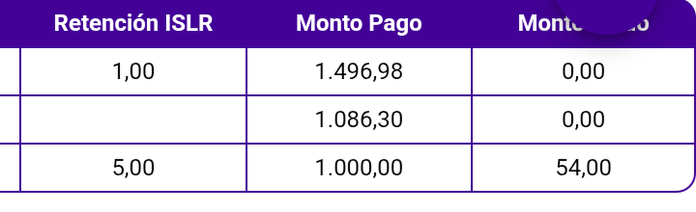
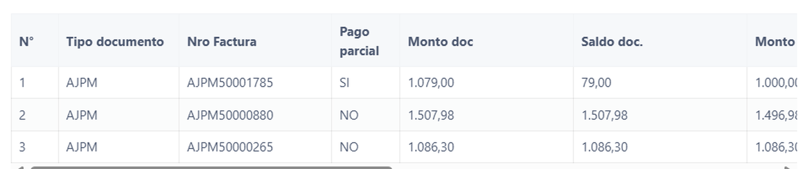

CONTROL DE CALIDADCierre de validación
27 de agosto de 2026
27 de agosto de 2026
Módulo de Cobros · Denario Premium Móvil · versión main · Cliente EL EDEN IMPORT TCN, C.A.
| Qué se validó | Si main corrige el defecto reportado el 26/08 en la versión 6.6.21.1 |
| Cliente y playa | EL EDEN IMPORT TCN, C.A. · Caribe (confirmada en runtime) |
| Cobro de evidencia | # Ref 1037 · 3.583,28 US$ · enviado y verificado en la nube |
| Capas medidas | Tres: pantalla del móvil · dato enviado al servidor · web administrativa |
Cuando un documento lleva retención, la deuda del cliente baja por el pago más lo retenido. El saldo pendiente que se guarda solo descuenta el pago, así que queda inflado exactamente en el monto retenido.
Las dos imágenes son del mismo cobro, tomadas con minutos de diferencia. A la izquierda, lo que ve el vendedor en su teléfono. A la derecha, lo que quedó registrado y ve la oficina.


AJPM50001785,
pago parcial SÍ, monto 1.079,00 y «Saldo doc.» 79,00 — 25,00 de más. Las filas 2 y 3, sin pago
parcial, muestran su saldo íntegro (comportamiento distinto, ver nota de alcance).| Capa | Medido | Debería | Veredicto |
|---|---|---|---|
| 1 · Pantalla del móvil — columna «Monto Saldo» | 54,00 | 54,00 | ✅ CORREGIDA |
| 2 · Dato enviado al servidor — en el envío | 79,00 | 54,00 | ❌ SIGUE ROTA |
| 2 · Base de datos de la nube | 79,00 | 54,00 | ❌ SIGUE ROTA |
| 3 · Web administrativa — columna «Saldo doc.» | 79,00 | 54,00 | ❌ PROPAGA EL ERROR |
La diferencia es de 25,00 exactos en las tres capas rotas — el IVA (20,00) más el ISLR (5,00). No es un redondeo: al convertirlo a bolívares con la tasa del día, el número inflado se multiplica y viaja igual de mal.
| Reproducción | Documento | Retenido | Guardado | Correcto | Infla |
|---|---|---|---|---|---|
| El Palmar · versión 6.6.21.1 | 010000016710032023 |
25,00 | 37.581,82 | 37.556,82 | 25,00 |
| El Edén · main | AJPM50001785 |
25,00 | 79,00 | 54,00 | 25,00 |
| El Edén · main · reproducción manual | AJPM50001336 |
15,00 | 51,58 | 36,58 | 15,00 |
La tercera se hizo a mano, sin automatización, siguiendo los pasos de reproducción de este informe (cobro # Ref 1043). En los tres casos la diferencia es exactamente el monto retenido, en dos clientes, dos versiones y dos monedas distintas.
| Capa | 6.6.21.1 | main | Cambio |
|---|---|---|---|
| Pantalla del móvil | inflado | correcto | ✔ arreglado |
| Dato enviado | inflado | inflado | sin cambio |
| Base de datos | inflado | inflado | sin cambio |
| Web | inflado | inflado | sin cambio |
| ¿Coinciden pantalla y sistema? | sí (ambos mal) | NO | ⚠ empeora |
La última fila es la que importa para el negocio: hasta ahora el vendedor y la oficina veían el mismo número. Con este arreglo a medias dejaron de coincidir.
El cálculo del saldo en el momento de enviar sigue restando únicamente el pago. Es un punto concreto del código, ya identificado y señalado en el reporte técnico.
| # | Pendiente | Por qué importa |
|---|---|---|
| 1 | El cobro de tipo Retención nunca se midió en la capa del dato enviado | Es justo el caso donde el arreglo propuesto podría duplicar el descuento. Debería probarse antes de dar la corrección por buena |
| 2 | Pago parcial sin retención | Es el control que aislaría si el cálculo es correcto cuando no hay retención de por medio |
retest_main_retencion_CIERRE_20260827, que cierra el defecto abierto el 26/08.retest-cierre.md. Cobro de evidencia: # Ref 1037.